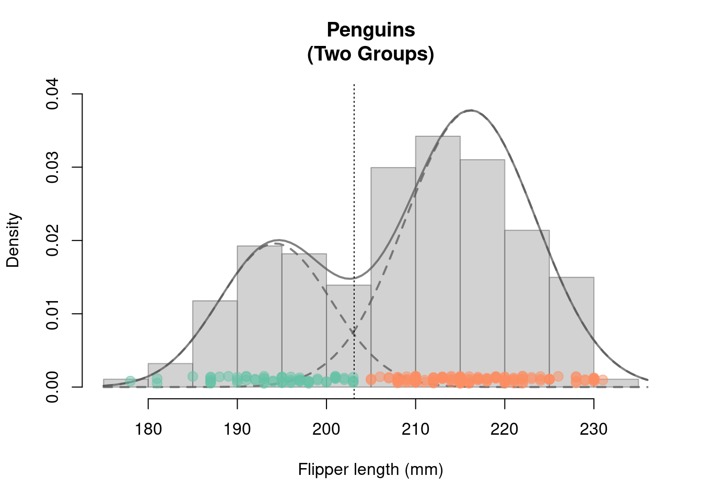

pkgs <- c("tidyverse", # Tidyverse packages
"palmerpenguins", # Penguins data
"scales", # Transparent colors: alpha()
"RColorBrewer", # Nice colors
"mclust", # Gaussian mixture models for clustering
"MASS") # Used to generate multivariate
# random normal variables
install.packages(pkgs)5 The Expectation Maximization (EM) Algorithm
The EM algorithm is often used to simplify, or make possible, complex maximum likelihood estimation problems. In this chapter, we present the EM algorithm for estimating Gaussian mixture distributions, as this is probably its most well-known application. Even the original work on the EM algorithm (Dempster, Laird, and Rubin 1977) already dealt with the estimation of Gaussian mixture distributions.
Possible Applications of Gaussian mixture distributions
- General: Finding grouping structures (two or more) in data (cluster analysis).
- For instance: Automatic video editing (e.g., separation of back- and foreground)
Some literature
Chapter 9 of Pattern Recognition and Machine Learning (Bishop 2006). Free PDF version: PDF-Version
Chapter 8.5 of Elements of Statistical Learning: Data Mining, Inference and Prediction (Hastie et al. 2009). Free PDF version: PDF-Version
R-Packages for this Chapter
The following R-packages are used in this chapter:
5.1 Motivation: Cluster Analysis using Gaussian Mixture Models
As a data example we use the palmerpenguins data (Horst, Hill, and Gorman (2020)).
These data are from surveys of penguin populations on the Palmer Archipelago (Antarctic Peninsula). Penguins are often difficult to distinguish from one another (Figure 5.1). We will try to find groupings in the penguin data (fin length) using a Gaussian mixture distribution. To be able to estimate such mixing distributions, we introduce the EM algorithm.

The following code chunk prepares the data
Caution
We have the information about the different penguin species (penguin_species) but in the following we pretend not to know this information.
We want to determine the group memberships (species) by cluster analysis on the basis of the fin lengths (penguin_flipper) alone.
Afterwards we can use the data in penguin_species to check how good our cluster analysis is.
library("tidyverse", quietly = TRUE)
library("palmerpenguins") # Penguin data
library("RColorBrewer") # nice colors
library("scales") # transparent colors: alpha()
col_v <- RColorBrewer::brewer.pal(n = 3, name = "Set2")
## Vorbereitung der Daten:
penguins <- palmerpenguins::penguins %>% # penguin data
tidyr::as_tibble() %>% # 'tibble'-dataframe
dplyr::filter(species!="Adelie") %>% # remove penguin species 'Adelie'
droplevels() %>% # remove the non-used factor level
tidyr::drop_na() %>% # remove NAs
dplyr::mutate(species = species, # rename variables
flipper = flipper_length_mm) %>%
dplyr::select(species, flipper) # select variables
##
n <- nrow(penguins) # sample size
## Variable 'Penguine_Art' aus penguins-Daten "herausziehen"
penguin_species <- dplyr::pull(penguins, species)
## Variable 'penguin_flipper' aus penguins-Daten "herausziehen"
penguin_flipper <- dplyr::pull(penguins, flipper)
## Plot
## Histogramm:
hist(x = penguin_flipper, freq = FALSE,
xlab="Flipper-Length (mm)", main="Penguins\n(Two Groups)",
col=gray(.65,.5), border=gray(.35,.5), ylim=c(0.0003, 0.039))
## Stipchart hinzufügen:
stripchart(x = penguin_flipper, method = "jitter",
jitter = .0005, at = .001,
pch = 21, col=alpha(col_v[3],.5),
bg=alpha(col_v[3],.5), cex=1.3, add = TRUE)
Clustering using Gaussian Mixture Distributions
- Estimate the Gaussian mixture distribution using the EM algorithm
- Assign the data points \(x_i\) to the group that maximizes the “posterior probability” (see Figure 5.2 and Section 5.3.2)

Figure Figure 5.2 shows the result of a cluster analysis based on a mixture distribution of two weighted normal distributions. Cluster result: 95% of the penguins could be correctly assigned - based only on their flipper lengths.
The following R codes can be used to reproduce the above cluster analysis (using the R package mclust) and Figure 5.2. We’ll learn everything about it in this chapter:
## mclust R package:
## Cluster analysis using Gaussian mixture distributions
suppressMessages(library("mclust"))
## Number of Groups
G <- 2
## Schätzung des Gaußschen Mischmodells (per EM Algorithmus)
## und Clusteranalyse
mclust_obj <- mclust::Mclust(data = penguin_flipper,
G = G,
modelNames = "V",
verbose = FALSE)
# summary(mclust_obj)
# str(mclust_obj)
## estimated group assignment
class <- mclust_obj$classification
## Fraction of correct group assignments:
# cbind(class, penguin_species)
round(sum(class == as.numeric(penguin_species))/n, 2)
## estimated means of the two Gaussian distributions
mean_m <- t(mclust_obj$parameters$mean)
## estimated variances (and possibly covariances)
cov_l <- list("Cov1" = mclust_obj$parameters$variance$sigmasq[1],
"Cov2" = mclust_obj$parameters$variance$sigmasq[2])
## estimated mixture weights (prior-probabilities)
prop_v <- mclust_obj$parameters$pro
## evaluating the Gaussian mixture density function
np <- 100 # number of evaluation points
xxd <- seq(min(penguin_flipper)-3,
max(penguin_flipper)+5,
length.out = np)
## mixture density
yyd <- dnorm(xxd, mean_m[1], sqrt(cov_l[[1]]))*prop_v[1] +
dnorm(xxd, mean_m[2], sqrt(cov_l[[2]]))*prop_v[2]
## single densities
yyd1 <- dnorm(xxd, mean_m[1], sqrt(cov_l[[1]]))*prop_v[1]
yyd2 <- dnorm(xxd, mean_m[2], sqrt(cov_l[[2]]))*prop_v[2]
## Plot
hist(x = penguin_flipper, xlab="Flipper length (mm)", main="Penguins\n(Two Groups)",
col=gray(.65,.5), border=gray(.35,.5), freq = FALSE, ylim=c(0, 0.04))
lines(x = xxd, y=yyd, lwd=2, col=gray(.35,.75))
lines(x = xxd, y=yyd1, lwd=2, col=gray(.35,.75), lty=2)
lines(x = xxd, y=yyd2, lwd=2, col=gray(.35,.75), lty=2)
abline(v=203.1, lty=3)
stripchart(penguin_flipper[class==1],
method = "jitter", jitter = .0005, at = .001,
pch = 21, col=alpha(col_v[1],.5), bg=alpha(col_v[1],.5), cex=1.3, add = TRUE)
stripchart(penguin_flipper[class==2],
method = "jitter", jitter = .0005, at = .001,
pch = 21, col=alpha(col_v[2],.5), bg=alpha(col_v[2],.5), cex=1.3, add = TRUE)5.2 The EM Algorithm for Maximum Likelihood Estimation of Gaussian Mixture Distributions
5.2.1 Gaussian Mixture Models (GMM)
We denote a random variable \(X\) that follows a Gaussian mixed distribution as \[ X\sim\mathcal{N}_{\mathcal{mix}}(G,\boldsymbol{\pi},\boldsymbol{\mu},\boldsymbol{\sigma}) \]
The corresponding density function of a Gaussian mixture distribution is defined as follows: \[ f_{GMM}(x|\boldsymbol{\pi},\boldsymbol{\mu},\boldsymbol{\sigma})=\sum_{g=1}^G\pi_g \varphi(x|\mu_g,\sigma_g) \tag{5.1}\]
- Weights: \(\boldsymbol{\pi}=(\pi_1,\dots,\pi_G)\) with \(\pi_g>0\) and \(\sum_{g=1}^G\pi_g=1\)
- Means: \(\boldsymbol{\mu}=(\mu_1,\dots,\mu_G)\) with \(\mu_g\in\mathbb{R}\)
- Standard deviations: \(\boldsymbol{\sigma}=(\sigma_1,\dots,\sigma_G)\) with \(\sigma_g>0\)
- Normal density of group \(g=1,\dots,G\): \[ \varphi(x|\mu_g,\sigma_g)=\frac{1}{\sqrt{2\pi}\sigma_g}\exp\left(-\frac{1}{2}\left(\frac{x-\mu_g}{\sigma_g}\right)^2\right) \]
- Unknown parameters: \(\boldsymbol{\pi}\), \(\boldsymbol{\mu}\) und \(\boldsymbol{\sigma}\)
5.2.2 Maximum Likelihood (ML) Estimation
We could try to estimate the unknown parameters \(\boldsymbol{\pi}=(\pi_1,\dots,\pi_G)\), \(\boldsymbol{\mu}=(\mu_1,\dots,\mu_G)\) and \(\boldsymbol{\sigma}=(\sigma_1,\dots,\sigma_G)\) using the maximum likelihood method.
I’ll say it right away: The attempt will fail.
Basic Idea of ML Estimation
- Assumption: The data \(\mathbf{x}=(x_1,\dots,x_n)\) is a realization of a random sample \[ X_1,\dots,X_n\overset{\text{i.i.d.}}{\sim}X \] with \[ X\sim\mathcal{N}_{\mathcal{mix}}(G,\boldsymbol{\pi},\boldsymbol{\mu},\boldsymbol{\sigma}). \]
That is, in a certain sense, the observed data \(\mathbf{x}=(x_1,\dots,x_n)\) “know” the unknown parameters \(\boldsymbol{\pi},\) \(\boldsymbol{\mu}\) und \(\boldsymbol{\sigma}\) and we “only” have to elicit this information from them.
Estimation Idea: Choose \(\boldsymbol{\pi}\), \(\boldsymbol{\mu}\) and \(\boldsymbol{\sigma}\) such that \(f_{GMM}(\cdot|\boldsymbol{\pi},\boldsymbol{\mu},\boldsymbol{\sigma})\) “optimally” fits the observed data \(\mathbf{x}\).
Implementation of the Estimation Idea: Maximize (with respect to \(\boldsymbol{\pi}\), \(\boldsymbol{\mu}\) and \(\boldsymbol{\sigma}\)) the likelihood function \[ \mathcal{L}(\boldsymbol{\pi},\boldsymbol{\mu},\boldsymbol{\sigma}|\mathbf{x})=\prod_{i=1}^nf_{GMM}(x_i|\boldsymbol{\pi},\boldsymbol{\mu},\boldsymbol{\sigma}) \] Or maximize the log-likelihood function (simpler maximization) \[ \begin{align*} %\ln\left(\mathcal{L}(\boldsymbol{\pi},\boldsymbol{\mu},\boldsymbol{\sigma}|\mathbf{x})\right)= \ell(\boldsymbol{\pi},\boldsymbol{\mu},\boldsymbol{\sigma}|\mathbf{x}) =&\sum_{i=1}^n\ln\left(f_{GMM}(x_i|\boldsymbol{\pi},\boldsymbol{\mu},\boldsymbol{\sigma})\right)\\ =&\sum_{i=1}^n\ln\left(\sum_{g=1}^G\pi_g\varphi(x_i|\mu_g,\sigma_g)\right) \end{align*} \tag{5.2}\]
Note
The maximization must take into account the parameter constraints in Equation 5.1; namely, \(\sigma_g>0\) and \(\pi_g>0\) for all \(g=1,\dots,G\) and \(\sum_{g=1}^G\pi_g=1\).
The maximizing parameter values \(\hat{\boldsymbol{\pi}}\), \(\hat{\boldsymbol{\mu}}\) and \(\hat{\boldsymbol{\sigma}}\) are the ML-Estimators:
\[ (\hat{\boldsymbol{\pi}},\hat{\boldsymbol{\mu}},\hat{\boldsymbol{\sigma}})=\arg\max_{\boldsymbol{\pi},\boldsymbol{\mu},\boldsymbol{\sigma}}\ell(\boldsymbol{\pi},\boldsymbol{\mu},\boldsymbol{\sigma}|\mathbf{x}) \]
😒 Problems with singularities in numerical solutions: If one tries to solve the above maximization problem numerically with the help of the computer, one will quickly notice that the results are highly unstable, implausible and not very trustworthy. The reason for these unstable estimates are problems with singularities.
For real GMMs (i.e. \(G>1\)), problems with singularities occur very easily during a numerical maximization. This happens whenever one or more of the normal distribution component(s) try to describe only single data points. A Gaussian density function centered around a single data point \(x_i,\) i.e. \[ \mu_g=x_i\quad\text{and}\quad \sigma_g\to 0 \] will thereby assume very large density function values, \[ \varphi(x_i|\mu_g=x_i,\sigma_g)\to\infty\quad\text{for}\quad \sigma_g\to 0, \] and thus maximize the log-likelihood in an undesirable way (see Figure 5.3). Such undesirable, trivial maximization solutions typically lead to implausible estimation results.

🤓 Analytic solution: It is a bit tedious, but one can maximize the log-likelihood analytically. If you do this, you will get the following expressions: \[ \begin{align*} \hat\pi_g&=\frac{1}{n}\sum_{i=1}^np_{ig},\quad \hat\mu_g=\sum_{i=1}^n\frac{p_{ig}}{\left(\sum_{j=1}^np_{jg}\right)}x_i\\[2ex] \hat\sigma_g&=\sqrt{\sum_{i=1}^n\frac{p_{ig}}{\left(\sum_{j=1}^np_{jg}\right)}\left(x_i-\hat\mu_g\right)^2} \end{align*} \tag{5.3}\] for \(g=1,\dots,G.\)
Note
Deriving the above expressions for \(\hat{\mu}_g\), \(\hat{\sigma}_g\) and \(\hat{\pi}_g\) is really a bit tedious (multiple applications of the chain rule, product rule, etc., as well as an application of the Lagrange multiplier method for optimization under side-constraints) but in principle doable.
🙈 However: The above expressions for \(\hat\pi_g\), \(\hat\mu_g\) and \(\hat\sigma_g\) depend themselves on the unknown parameters \(\boldsymbol{\pi}=(\pi_1,\dots,\pi_G)\), \(\boldsymbol{\mu}=(\mu_1,\dots,\mu_G)\) and \(\boldsymbol{\sigma}=(\sigma_1,\dots,\sigma_G)\), because: \[ p_{ig}=\frac{\pi_g\varphi(x_i|\mu_g,\sigma_g)}{f_{GMM}(x_i|\boldsymbol{\pi},\boldsymbol{\mu},\boldsymbol{\sigma})} \tag{5.4}\] for \(i=1,\dots,n\) and \(g=1,\dots,G\).
- The probability \(p_{ig}\) in Equation 5.4 is called the posterior probability. The posterior probability \(p_{ig}\) is the probability that penguine \(i\) with flipper length \(x_i\) belongs to group \(g\).
- The probability \(\pi_g\) in Equation 5.4 is called the prior probability. The prior probability \(\pi_g\) is the probability that a penguine \(i\), from which we know nothing about its flipper length, belongs to group \(g\).
Note
Still, we cannot properly define what we mean by “prior probability” and “posterior probability”. We’ll discuss the prior and the posterior probability in more detail in Section 5.3.2.
Thus, the expressions for \(\hat\pi_g\), \(\hat\mu_g\), and \(\hat\sigma_g\) do not allow direct estimation of the unknown parameters \(\pi_g\), \(\mu_g\), and \(\sigma_g\).
🥳 Solution: The EM Algorithm
5.2.3 The EM Algorithm for GMMs
The expressions for \(\hat\pi_g\), \(\hat\mu_g\), and \(\hat\sigma_g\) in Equation 5.3, however, suggest a simple iterative maximum likelihood estimation procedure: An alternating estimation of
the (unknown) posterior probability \[ p_{ig} \] and
the (unknown) parameters \[ (\pi_g,\mu_g,\sigma_g). \]
Tip
Once you know \(p_{ig},\) you can compute \((\hat\pi_g, \hat\mu_g,\hat\sigma_g)\) using Equation 5.3.
Once you know \((\hat\pi_g, \hat\mu_g,\hat\sigma_g),\) you can compute \(p_{ig}\) using Equation 5.4.
The EM Algorithm:
Set starting values \(\boldsymbol{\pi}^{(0)}\), \(\boldsymbol{\mu}^{(0)}\) und \(\boldsymbol{\sigma}^{(0)}\)
For \(r=1,2,\dots\)
(Expectation) Compute: \[p_{ig}^{(r-1)}=\frac{\pi_g^{(r-1)}\varphi(x_i|\mu^{(r-1)}_g,\sigma_g^{(r-1)})}{f_{GMM}(x_i|\boldsymbol{\pi}^{(r-1)},\boldsymbol{\mu}^{(r-1)},\boldsymbol{\sigma}^{(r-1)})}\]
(Maximization) Compute:
\(\hat\pi_g^{(r)}=\frac{1}{n}\sum_{i=1}^np_{ig}^{(r-1)},\quad\quad\hat\mu_g^{(r)}=\sum_{i=1}^n\frac{p_{ig}^{(r-1)}}{\left(\sum_{j=1}^np_{jg}^{(r-1)}\right)}x_i\)
\(\hat\sigma_g^{(r)}=\sqrt{\sum_{i=1}^n\frac{p_{ig}^{(r-1)}}{\left(\sum_{j=1}^np_{jg}^{(r-1)}\right)}\left(x_i-\hat\mu_g^{(r)}\right)^2}\)
Check Convergence:
Stop if the value of the maximized log-likelihood function, \(\ell(\boldsymbol{\pi}^{(r)},\boldsymbol{\mu}^{(r)},\boldsymbol{\sigma}^{(r)}|\mathbf{x})\), does not change anymore substantially.
The above pseudo code is implemented in the following code chunk:
library("MASS")
library("mclust")
## data:
x <- cbind(penguin_flipper) # data [n x d]-dimensional.
d <- ncol(x) # dimension (d=1: univariat)
n <- nrow(x) # sample size
G <- 2 # number of groups
## further stuff
llk <- matrix(NA, n, G)
p <- matrix(NA, n, G)
loglikOld <- 1e07
tol <- 1e-05
it <- 0
check <- TRUE
## EM Algorithm
## 1. Starting values for pi, mu and sigma:
pi <- rep(1/G, G) # naive pi
sigma <- array(diag(d), c(d,d,G)) # varianz = 1
mu <- t(MASS::mvrnorm(G, colMeans(x), sigma[,,1]*4) )
while(check){
## 2.a Expectation step
for(g in 1:G){
p[,g] <- pi[g] * mclust:::dmvnorm(x, mu[,g], sigma[,,g])
}
p <- sweep(p, 1, STATS = rowSums(p), FUN = "/")
## 2.b Maximization step
par <- mclust::covw(x, p, normalize = FALSE)
mu <- par$mean
sigma <- par$S
pi <- colMeans(p)
## 3. Check convergence
for(g in 1:G) {
llk[,g] <- pi[g] * mclust:::dmvnorm(x, mu[,g], sigma[,,g])
}
loglik <- sum(log(rowSums(llk))) # current max. log-likelihood value
##
diff <- abs(loglik - loglikOld)/abs(loglik) # rate of change
loglikOld <- loglik
it <- it + 1
## Check whether rate of change is still large enough (> tol)?
check <- diff > tol
}
## Estimation results:
results <- matrix(c(pi, mu, sqrt(sigma)),
nrow = 3,
ncol = 2,
byrow = TRUE,
dimnames = list(c("weights",
"means",
"standard-deviations"),
c("group 1",
"group 2")))
##
results %>% round(., 2) group 1 group 2
weights 0.69 0.31
means 216.19 194.25
standard-deviations 7.32 6.255.3 The True View on the EM Algorithm: Adding Unobserved Variables
The EM algorithm allows maximum likelihood problems to be simplified by adding unobserved (“latent”) variables to the data. This idea is the actually original contribution of the EM Algorithm (Dempster, Laird, and Rubin (1977)). While this idea can be applied for solving various maximum likelihood problems, we keep focusing on estimating GMMs.
Remember:
We were note able to maximize the log-likelihood function \[ \ell(\boldsymbol{\pi},\boldsymbol{\mu},\boldsymbol{\sigma}|\mathbf{x}) =\sum_{i=1}^n\ln\left(\sum_{g=1}^G\pi_g\varphi(x_i|\mu_g,\sigma_g)\right) \] directly. In fact, the \(\ln(\sum_{g=1}^G[\dots])\)-construction makes life difficult here.
Moreover, so far, we were not able to propertly state what we mean by prior and posterior probability.
All this can be solved my adding unobserved group labels as missing variables.
5.3.1 Completion of the Data
In our penguin data there are two groups \(g\in\{1,2\}.\)
Thus, in principle (albeit unobserved) there are \(G=2\) dimensional dummy variable, also called group-label, vectors \((z_{i1},z_{i2}),\) \(i=1,\dots,n,\) with
\[
(z_{i1},z_{i2})=
\left\{\begin{array}{ll}
(1,0)&\text{if penguin }i\text{ belongs to group }g=1\\
(0,1)&\text{if penguin }i\text{ belongs to group }g=2\\
\end{array}\right.
\]
Tip
Case of more than two \(G>2\) groups:
\[
\begin{align*}
&(z_{i1},\dots,z_{ig},\dots,z_{iG})=\\[2ex]
&=\left\{\begin{array}{ll}
(1,0,\dots,0)&\text{if data point }i\text{ belongs to group }g=1\\
(0,1,\dots,0)&\text{if data point }i\text{ belongs to group }g=2\\
\quad\quad\vdots&\\
(0,0,\dots,1)&\text{if data point }i\text{ belongs to group }g=G\\
\end{array}\right.
\end{align*}
\]
The group labels \(z_{ig}\) can take values \(z_{ig}\in\{0,1\},\) where, however, it must hold true that \[ \sum_{g=1}^Gz_{ig}=1. \]
Note
Requiring that \[ \sum_{g=1}^Gz_{ig}=1 \] means that for each (penguin) \(i\) there is only one group. This is an important restriction of GMMs, which is not problematic for the penguin data. However, it may be problematic in applications with hierarchical grouping structures.
Unfortunately, the true group labels \(z_{ig}\) are unknown. However, we nevertheless know something about these assignments. The weights \[ \pi_1,\dots,\pi_G \] of the Gaussian mixture distribution \[ f_{GMM}(x|\boldsymbol{\pi},\boldsymbol{\mu},\boldsymbol{\sigma})=\sum_{g=1}^G\pi_g\varphi(x|\mu_g,\sigma_g), \] give us the proportions of the individual distributions \(\varphi(\cdot|\mu_g,\sigma_g)\) in the total distribution \(f_{GMM}\).
That is, on average, \[ \pi_g\cdot 100\% \] of the data points \(i=1,\dots,n\) come from group \(g.\)
Thus, we can consider the unobserved group label \(z_{ig}\) as a (unobserved) realization of a binary random variable \(Z_{ig}\in\{0,1\}\) with probability mass function \[ \begin{align*} P(Z_{ig}=1)&=\pi_g\\[2ex] P(Z_{ig}=0)&=(1-\pi_g)\\[2ex] \end{align*} \] for each \(i=1,\dots,n.\)
The condition \[ \sum_{g=1}^GZ_{ig}=1 \] implies that if \[ Z_{ig}=1 \] then \[ Z_{ij}=0\quad \text{for all }j\neq g. %\quad \Rightarrow\quad Z_{i1}=0,\dots,Z_{ig-1}=0,Z_{ig+1}=0,\dots,Z_{iG}=0. \]
5.3.2 Prior and Posterior Probabilities
Prior Probability \(\pi_g\)If we know nothing about the flipper length of penguin \(i\) then we are left with the prior probability:
If we know the flipper length of penguin \(i\) then we can update the prior probability using Bayes’ Theorem (see Equation 5.5) which leads to the posterior probability:
Bayes’ Theorem applied to the Gaussian mixture distribution
\[ \begin{align*} p_{ig} =\overbrace{P(Z_{ig}=1|X_i=x_i)}^{\text{Posterior-prob}} &=\frac{\pi_g\varphi(x_i|\mu_g,\sigma_g)}{f_{GMM}(x_i|\boldsymbol{\pi},\boldsymbol{\mu},\boldsymbol{\sigma})}\\[2ex] &=\frac{\overbrace{P(Z_{ig}=1)}^{\text{prior-prob}}\varphi(x_i|\mu_g,\sigma_g)}{f_{GMM}(x_i|\boldsymbol{\pi},\boldsymbol{\mu},\boldsymbol{\sigma})} \end{align*} \tag{5.5}\]
Important
The posterior probabilities \(p_{ig}\) are conditional means: \[ \begin{align*} p_{ig} &= 1\cdot P(Z_{ig}=1|X_i=x_i)+0\cdot P(Z_{ig}=0|X_i=x_i)\\[2ex] &= \mathbb{E}(Z_{ig}|X_i=x_i)\\ \end{align*} \tag{5.6}\] Thus, the computation of \(p_{ig}\) in the Expectation-step of the EM algorithm (Section 5.2.3) is indeed a computation of an expectation.
5.3.3 The Abstract Version of the EM-Algorithm
If, in addition to the data points, \(\mathbf{x}=(x_1,\dots,x_n),\) we had also observed the group assignments, \(\mathbf{z}=(z_{11},\dots,z_{nG}),\) then we could establish the following alternative likelihood (\(\tilde{\mathcal{L}}\)) and log-likelihood (\(\tilde{\ell}\)) functions: \[ \begin{align*} \tilde{\mathcal{L}}(\boldsymbol{\pi},\boldsymbol{\mu},\boldsymbol{\sigma}|\mathbf{x},\mathbf{z}) &=\prod_{i=1}^n\prod_{g=1}^G\left(\pi_g\varphi(x_i|\mu_g,\sigma_g)\right)^{z_{ig}}\\[2ex] \tilde{\ell}(\boldsymbol{\pi},\boldsymbol{\mu},\boldsymbol{\sigma}|\mathbf{x},\mathbf{z}) &=\sum_{i=1}^n\sum_{g=1}^Gz_{ig}\left\{\ln\left(\pi_g\right)+\ln\left(\varphi(x_i|\mu_g,\sigma_g)\right)\right\} \end{align*} \]
Unlike the original log-likelihood function (Equation 5.2), the new log-likelihood function \(\tilde\ell\) would be easy to maximize: we can directly calculate the logarithm of the normal distribution. This simplifies the maximization problem considerably, since the normal distribution belongs to the exponential family (see Section 4.4) which is not the case for the normal mixture distribution.
We do not observe the realizations \[ \mathbf{z}=(z_{11},\dots,z_{nG}), \] but we know the distribution of the random variables \[ \mathbf{Z}=(Z_{11},\dots,Z_{nG}). \] This leads to a stochastic version of the log-likelihood function: \[ \tilde{\ell}(\boldsymbol{\pi},\boldsymbol{\mu},\boldsymbol{\sigma}|\mathbf{x},\mathbf{Z})=\sum_{i=1}^n\sum_{g=1}^GZ_{ig}\left\{\ln\left(\pi_g\right)+\ln\left(\varphi(x_i|\mu_g,\sigma_g)\right)\right\} \] From this, we can calculate the conditional expected value (using Equation 5.6), which motivates the “Expectation”-Step in the EM-algorithm: \[ \begin{align*} &\mathbb{E}_{\boldsymbol{\theta}}(\tilde{\ell}(\boldsymbol{\pi},\boldsymbol{\mu},\boldsymbol{\sigma}|\mathbf{x},\mathbf{z})|X_i=x_i)\\[2ex] &\quad =\sum_{i=1}^n\sum_{g=1}^Gp_{ig}\left\{\ln\left(\pi_g\right)+\ln\left(\varphi(x_i|\mu_g,\sigma_g)\right)\right\} \end{align*} \]
The following EM algorithm differs only in notation from the version already discussed in Section 5.2.3. The notation chosen here clarifies that the Expectation-step updates the log-likelihood function to be maximized in the Maximization-step. Moreover, the chosen notation is abstract enough to transfer the basic idea of the EM algorithm to other maximum likelihood problems.
In the following, the parameter vector \((\boldsymbol{\pi},\boldsymbol{\mu},\boldsymbol{\sigma})\) will be denoted as \(\boldsymbol{\theta}\) for simplicity.
Set starting values \(\boldsymbol{\theta}^{(0)}=(\pi^{(0)}, \mu^{(0)}, \sigma^{(0)})\)
For \(r=1,2,\dots\)
(Expectation) Compute: \[ \begin{align*} \mathcal{Q}(\boldsymbol{\theta},\boldsymbol{\theta}^{(r-1)}) &=\mathbb{E}_{\boldsymbol{\theta}^{(r-1)}}(\tilde{\ell}(\boldsymbol{\pi},\boldsymbol{\mu},\boldsymbol{\sigma}|\mathbf{x},\mathbf{z})|X_i=x_i)\\ &=\sum_{i=1}^n\sum_{k=1}^Kp_{ig}^{(r-1)}\left\{\ln\left(\pi_g\right)+\ln\left(\varphi(x_i|\mu_g,\sigma_g)\right)\right\} \end{align*} \] where \[ p_{ig}^{(r-1)} = \frac{\pi_g^{(r-1)} \varphi(x_i|\mu_g^{(r-1)},\sigma_g^{(r-1)})}{f_{GMM}(x_i|\boldsymbol{\pi}^{(r-1)},\boldsymbol{\mu}^{(r-1)},\boldsymbol{\sigma}^{(r-1)})} \]
(Maximization) Compute: \[ \begin{align*} \boldsymbol{\theta}^{(r)}=\arg\max_{\boldsymbol{\theta}}\mathcal{Q}(\boldsymbol{\theta},\boldsymbol{\theta}^{(r-1)}) \end{align*} \]
Check Convergence:
Stop if the value of the maximized log-likelihood function, \[ \mathcal{Q}(\boldsymbol{\theta}^{(r)},\boldsymbol{\theta}^{(r-1)}), \] does not change anymore substantially.
5.4 (Unsupervised) Classification
The problem of predicting a discrete random variable \(Y\) (i.e. the group labels) from a random variable \(X\) is called classification.
Note: Above, we used \(Z,\) here we use \(Y\) to denote the (unknown) group labels.
A classification rule is a function \[ h: X \to Y. \] That is, when we observe a new \(X,\) we predict \(Y\) to be \(h(X).\)
If there are learning/training data with group-labels \[ (Y_1,X_1),\dots,(Y_n,X_n) \] that can be used to estimate \(h,\) it’s called a supervised classification (computer science: supervised learning) problem.
If there are learning/training data without group-labels \[ X_1,\dots,X_n \] it’s called a unsupervised classification (computer science: unsupervised learning) problem or cluster analysis.
5.4.1 Bayes Classifier
We would like to find a classification rule \(h\) that makes accurate predictions. The most often used quantity to measure the accuracy of classification methods is the error rate.
That is, we try to find a classifier \(h\) that minimizes \(L(h)\) and \(\hat{L}_n(h),\) respectively.
Let us focus on the special case of only two groups which can be coded, without loss of generality, as \[ Y\in\{0,1\} \] For instance, \[ Y_i=\left\{\begin{array}{ll} 1&\text{if penguin $i$ belongs to species Chinstrap}\\ 0&\text{if penguin $i$ belongs to species Gentoo}. \end{array}\right.. \]
The regression function (i.e. the conditional mean function) is then given by \[ m(x):=\mathbb{E}(Y|X=x)=P(Y=1|X=x). \] From Bayes’s theorem it follows that \[ m(x)=P(Y=1|X=x)=\frac{\pi_1 f_1(x)}{\pi_1 f_1(x)+\pi_0 f_0(x)}, \] where
- \(f_0(x) = f(x|Y=0);\) conditional density of \(X\) given \(Y=0\)
- \(f_1(x) = f(x|Y=1);\) cconditional density of \(X\) given \(Y=1\)
- \(\pi_0 = P(Y=0)\)
- \(\pi_1 = P(Y=1)\)
- \(\pi_0 + \pi_1 = 1\)
Note: Here \(f\) denotes here some (unknown) density function, not necessarily the Gaussian density.
The Bayes classifier, \(h^\ast,\) classifies data according to the Bayes classification rule
Equivalent forms of the Bayes’ classification rule: \[ h^\ast(x) = \left\{\begin{array}{ll} 1&\text{if }P(Y=1|X=x)>P(Y=0|X=x)\\ 0&\text{otherwise}. \end{array}\right. \] and \[ h^\ast(x) = \left\{\begin{array}{ll} 1&\text{if }\pi_1 f_1(x)>\pi_0f_0(x)\\ 0&\text{otherwise}. \end{array}\right. \]
The Bayes decision rule depends on unknown quantities and thus cannot be used in practice. However, we can use data to find some approximation to the Bayes decision rule.
Very roughly, there are three main approaches:
Empirical Risk Minimization: Choose a set of classifiers \(\mathcal{H}\) and try to find \(\hat{h}\in\mathcal{H}\) such that \[ \hat{h}:=\arg\min_{h\in\mathcal{H}}L(h) \]
Regression: Find an estimate \(\hat{m}(x)\) of the regression function \(m(x)=\mathbb{E}(Y|X=x)\) and then use \[ \hat{h}(x) = \left\{\begin{array}{ll} 1&\text{if }\hat{m}(x)>\frac{1}{2}\\ 0&\text{otherwise}. \end{array}\right. \] Example: Linear regression, logistic regression, etc.
Density Estimation: Find density and probability estimates \(\hat{f}_0,\) \(\hat{f}_1,\) \(\hat{\pi}_0=\hat{P}(Y=0),\) and \(\hat{\pi}_1=\hat{P}(Y=1)\) and define \[ \hat{m}(x)=\hat{P}(Y=1|X=x)=\frac{\hat{\pi}_1 \hat{f}_1(x)}{\hat{\pi}_1 \hat{f}_1(x)+\hat{\pi}_0 \hat{f}_0(x)}. \] Then use \[ \hat{h}(x) = \left\{\begin{array}{ll} 1&\text{if }\hat{m}(x)>\frac{1}{2}\\ 0&\text{otherwise}. \end{array}\right. \] Example: Linear/quadratic discriminant analysis, naive Bayes, Gaussian mixture distributions
More than two group labels
Of course, we can generalize all this to the case where the discrete random variables \(Y\) takes on more than only two group-labels.
Let \[ Y\in\{1,\dots,G\} \] for any \(G>1.\)
Then, the (error rate optimal) Bayes classification rule is \[ \begin{align*} h^\ast(x) & = \arg\max_{g}P(Y=g|X=x) \\[2ex] & = \arg\max_{g}\pi_g f_g(x),\\[2ex] \end{align*} \] where \(P(Y=g|X=x)\) is the posterior probability \[ P(Y=g|X=x) = \frac{\pi_g f_g(x)}{\sum_{g=1}^G\pi_gf_g(x)}, \] where \(\pi_g\) is the prior probability \[ \pi_g = P(Y=g), \] and where \(f_g\) denotes the conditional density function of \(X\) given \(Y=g\) \[ f_g(x) = f(x|Y=g) \]
5.4.2 Synopsis: Penguin Example
In our penguin example, we use the density estimation approach.
Estimating general densities \(f\) is hard — particularly in multivariate cases. Therefore, one often tries to make certain simplifying assumptions such as \(f\) being a Gaussian density.
In our penguin example, we assume that the conditional density function of flipper length \(X\) given species \(Y=g\) can be modelled reasonably well using a Gaussian density, \[ f(x|Y=g) = \varphi(x|\mu_g,\sigma_g) = \frac{1}{\sqrt{2\pi}\sigma_g}\exp\left(-\frac{1}{2}\left(\frac{x-\mu_g}{\sigma_g}\right)^2\right). \] which leads to a Gaussian Mixture distribution.
The unknown parameters \(\pi_g,\) \(\mu_g,\) and \(\sigma_g,\) \(g=1,\dots,G,\) are estimated using the EM algorithm
- Estimate the Gaussian mixture distribution using the EM algorithm
- Assign the data points \(x_i\) to the group that maximizes the “posterior probability”
Figure 5.4 shows the iterative progress when estimating a Gaussian mixture distribution using the EM algorithm:
- The vertical line shows the decision boundary
- The two Gaussian density functins (dashed lines) show the conditional densities \(\varphi(x|\mu_g,\sigma_g),\) \(g=1,2.\)
- The orange and green dots show the (unsupervised) classification results

The final estimation result replicates Figure 5.2.
But well, the average penguin probably doesn’t care about the EM Algorithm.

References
Bishop, Christopher M. 2006. Pattern Recognition and Machine Learning. Springer.
Dempster, Arthur P, Nan M Laird, and Donald B Rubin. 1977. “Maximum Likelihood from Incomplete Data via the EM Algorithm.” Journal of the Royal Statistical Society: Series B 39 (1): 1–22.
Hastie, Trevor, Robert Tibshirani, Jerome H Friedman, and Jerome H Friedman. 2009. The Elements of Statistical Learning: Data Mining, Inference, and Prediction. Springer.
Horst, Allison Marie, Alison Presmanes Hill, and Kristen B Gorman. 2020. Palmerpenguins: Palmer Archipelago (Antarctica) Penguin Data. https://doi.org/10.5281/zenodo.3960218.